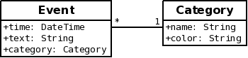
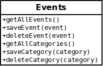

Published on 23 June 2012.
This post was originally published 16 January 2011 with addition of Clojure note 22 January 2011. The site it was published on is no longer active, and I therefore decided to move the post over here.
This post discusses how you can represent and edit data structures in an object oriented programming language.
The data structure we will use for our discussion is one that represents a set of events:

Some rules about this data structure:
In order to ensure that the rules of the data structure hold at all times, all operations that modifies the data structure must be done at the highest level.
We can’t for example modify a category in isolation because a category doesn’t know about other categories and we can thus not make sure that we give it a unique name.
The interface for working with this data structure looks like this:

A typical session looks like this:
events = Events("path/to/events.txt")
firstEvent = events.getAllEvents()[0]
firstEvent.text = "a new text"
events.saveEvent(firstEvent)Or like this:
events = Events("path/to/events.txt")
firstEvent = events.getAllEvents()[0]
events.deleteCategory(firstEvent.category)The Events object knows about the rules of the data structure and ensures that they are followed.
Consider the following session:
events = Events("path/to/events.txt")
firstCategory = events.getAllCategories()[0]
firstCategory.name = "new name"At first, it looks like it doesn’t do much. But consider the case when firstCategory is a mutable object. When we change the name, the data structure will also be aware of this new name since firstCategory refers to the same object that the data structure knows about and that was sent in return to getAllCategories().
So we might actually corrupt the data structure if we assign a new name to the category that is already in use by another category. Most likely it is the saveCategory method that performs this check. But since that method was never called (and the data structure was still modified), we end up with a corrupt data structure.
One solution is to make our objects immutable. In order to change a property in an event or a category, we have to create a new object with our desired values. This way, the objects returned from getAllEvents() and getAllCategories() can never be changed.
We could write helper methods like setName that returns a new Event that has all the values from the previous one but the name different:
events = Events("path/to/events.txt")
firstCategory = events.getAllCategories()[0]
firstCategoryEdited = firstCategory.setName("new name")
events.saveCategory(firstCategoryEdited)Here a call to saveCategory is necessary for the data structure to find out about the edited category.
All save methods in Events are supposed to add a new object if the object passed in does not already exist in the data structure. Otherwise they are supposed to update the individual object in the data structure.
This does not work so well with immutable objects. Consider the saveCategory call that we did in the previous session. There is no way for the data structure to know if the category already exists.
One solution could be to pass in two categories in the save method: the old one and the new one. Then the data structure can replace all occurrences of the old category with the new one.
As we will see next, this solution does not work for events.
Now that we have immutable objects, the only way to distinguish one object from another is to look at the individual fields. Two categories are for example considered to be the same if both the name and the color are equal.
This causes a problem with events. One rule was that we could have two events with the exact same fields. But when we edit one, the other should not be changed:
events = Events("path/to/events.txt")
events.saveEvent(Event("July 5", "my birthday"), original=None)
events.saveEvent(Event("July 5", "my birthday"), original=None)
birthday = events.getAllEvents()[0]
event.saveEvent(birthday.setTime("July 6"), original=birthday)After this session we should have two events: one on July 5 and one on July 6. But when we save (assuming the save now also takes the original so it knows what to replace) we can not know that only the first event should be updated. So we end up with two events on both July 6.
The solution is to introduce an id field in the Event object so that we can distinguish two events that has the exact same properties.
Introducing id fields does not seem very object oriented. But I can’t think of another way to solve this problem.
The problem is very centered around editing data. Each individual field is interesting to modify. Perhaps OO is not suited for this kind of problem.
I would be interested in seeing other approaches to solving this problem. Is there a more object oriented solution? How do you solve this problem in a functional language (where immutable data is more common)?
Clojure seems to have a model where you can separate the object identity from the object data. I’m not sure how, or if, it can be applied to an object oriented programming language. You can read more at Values and Change - Clojure’s approach to Identity and State.
What is Rickard working on and thinking about right now?
Every month I write a newsletter about just that. You will get updates about my current projects and thoughts about programming, and also get a chance to hit reply and interact with me. Subscribe to it below.